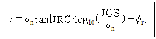

화약류관리산업기사 (2013-03-10 기출문제)
1과목: 일반화약학
1. 혼합화약류에 속하지 않는 것은?
- 흑색화약
- 질산암모늄폭약
- 카알릿
- 면약
(정답률: 알수없음)

2. 순폭시험에서 제1약포와 제2약포사이에 합성수지판, 금속판 등으로 양자를 격리하여 제1약포의 고온가스나 고체투사물의 영향을 제거하고 충격만을 받게 하는 시험법은?
- 카드갭시험
- 사상순폭시험
- 밀폐순폭시험
- 반약포시험
(정답률: 알수없음)
3. 정적위력시험과 관계가 없는 것은?
- 순폭시험
- 연주시험
- 탄도진자시험
- 탄동구포시험
(정답률: 알수없음)
4. 테트릴의 성질에 관한 설명으로 옳은 것은?
- 흑색이며 일광을 받으면 청색으로 변한다.
- 기폭이 용이하고 폭력이 크므로 전폭약에 사용한다.
- 물에 잘 녹으며 아세톤이나 벤젠에 약간 녹는다.
- 융점은 약 70℃이고 폭속은 약 8500m/s 이다.
(정답률: 알수없음)
5. 다음의 화약류 시험에 관한 설명 중 옳은 것은?
- 내열시험은 화약류의 발열량을 측정하는 시험이다.
- 연판(납판)시험은 공업뇌관의 성능을 비교하는 시험이다.
- 연주시험은 폭약의 흡습성을 측정하는 시험이다.
- 폭속시험은 폭약의 안정도를 비교하는 시험이다.
(정답률: 알수없음)
6. 화약류를 제조할 때 산소공급제로 사용되는 것은?
- NaNO3
- TNT
- NaCl
- CaCl2
(정답률: 알수없음)
7. 폭약의 배합 성분을 틀리게 나타낸 것은?
- 산소공급제 : 질산암모늄, 과염소산암모늄
- 예감제 : 질산칼륨, 질산바륨
- 감열소염제 : 소금, 염화칼륨
- 가연제 : 옥분, 전분
(정답률: 알수없음)
8. 폭속이 큰 것부터 작은 순서로 차례대로 나열한 것은?
- TNT ＞ 테트릴 ＞ 헥소겐
- 헥소겐 ＞ 테트릴 ＞ TNT
- TNT ＞헥소겐 ＞ 테트릴
- 헥소겐 ＞ TNT ＞ 테트릴
(정답률: 알수없음)
9. 다이너마이트를 32mm의 약경에 125g을 넣고 순폭시험한 결과 순폭거리가 224mm였다. 순폭도는 얼마인가?
- 3
- 5
- 7
- 9
(정답률: 알수없음)
10. 다음 중 발사약으로 사용되는 것은?
- TNT
- 무연화약
- 뇌홍
- 질산암모늄
(정답률: 알수없음)
11. 전폭약으로 사용되는 펜톨라이트의 주요 조성은?
- TNT + RDX
- TNT + 피크린산
- PETN + RDX
- PETN + TNT
(정답률: 알수없음)
12. 다음 중 위력이 약하여 뇌관의 기폭약으로 단독으로 사용할 수 없는 것은?
- 뇌홍
- DDNP
- 트리시네이트(LS)
- 아지화연
(정답률: 알수없음)
13. 도폭선을 만들 때 금속관의 재질과 심약이 옳게 짝지어진 것은?
- 수은(Hg) - NC
- 납(Pb) - TNT
- 구리(Cu) - NG
- 철(Fe) - TNT
(정답률: 알수없음)
14. KS 표준에 따르면 다이너마이트의 순폭도는 얼마 이상인가?
- 1 이상
- 2 이상
- 3 이상
- 4 이상
(정답률: 알수없음)
15. 도폭선의 심약으로 사용되는 폭약으로 발화점은 약 230℃이고, 폭속은 약 8500m/s인 물질은?
- 흑색화약
- 무연화약
- 헥소겐(RDX)
- 니트로글리세린
(정답률: 알수없음)
16. 아지화납에 대한 설명 중 틀린 것은?
- 아지화나트륨과 초산납으로 제조한다.
- 구리와 접촉하면 예민한 아지화구리가 생성된다.
- 물에는 녹지 않으나 에틸알코올에 잘 녹는다.
- 열적 안정성이 기폭약중에서 우수하다.
(정답률: 알수없음)
17. 다음 중 자연발화 또는 자연폭발을 일으킬 위험이 가장 높은 화약류는?
- 도화선
- ANFO 폭약
- 무연화약
- 뇌관
(정답률: 알수없음)
18. 다음 산소공급제 중 산소를 가장 많이 발생하는 것은?
- NH4ClO4
- KClO3
- KClO4
- KNO3
(정답률: 알수없음)
19. 흑색화약의 주성분이 아닌 것은?
- 나트륨
- 황
- 옥탄
- 질산칼륨
(정답률: 알수없음)
20. 다이너마이트에 함유하는 NC(notri cellulose)의 역할은?
- 예감제
- 산소공급제
- 교화제
- 소염제
(정답률: 알수없음)
2과목: 발파공학
21. 다음 소활 발파법에 대한 설명으로 옳지 않은 것은?
- 소활 발파법에는 천공법, 사혈법, 복토법이 있다.
- 복토법에서 사용되는 폭약은 발파소음, 암석의 비산 등을 고려하여 폭속과 맹도가 작은 것을 사용해야 한다.
- 천공법은 다른 방법보다 소량의 폭약을도 발파가 가능하기 때문에 효과적이다.
- 사혈법은 옥석이나 암석의 밑부분에 구멍을 파고 폭약을 장전해서 발파하는 방법이다.
(정답률: 알수없음)
22. 발파현장에서 천공작업에 의해 발생되는 음향파워레벨이 130dB이다. 수음점이 천공작업을 실시하는 장소와 완전 노출되어 있으며 평지이다. 음원으로부터 50m 이격된 수음점에서의 음압레벨은? (단, 음원은 점음원으로서, 반구면파 전파로 간주한다.)
- 73.94 dB
- 88.02 dB
- 93.25 dB
- 99.25 dB
(정답률: 알수없음)
23. 터널발파에서 주위 암반의 손상을 작게 하기 위해 외곽공의 장약작업에 이용되는 발파이론은?
- 노이만 효과
- 디커플링 효과
- 밀장전 효과
- 홉킵슨 효과
(정답률: 알수없음)
24. 다음 중 전색의 목적으로 옳지 않은 것은?
- 장전폭약을 완폭시키기 위해서
- 가연성 가스나 탄진 착화를 방지하기 위해서
- 폭약의 변질을 방지하기 위해서
- 발파 위력을 크게 하기 위해서
(정답률: 알수없음)
25. 다음 중 평행공 심빼기 발파에 대한 설명으로 옳지 않은 것은?
- 평행공 심빼기의 기본 개념은 폭약을 넣지 않은 무장약
- 공을 천공하여 자유연의 역할을 하도록 하는 것이다. 천공길이에 관계없이 경사공 심빼기보다 발파효과가 좋다.
- 파석의 비산거리가 비교적 적고 막장 부근에 집중되므로 파석처리가 용이하다.
- 심빼기 공은 평행 천공이 요구되고, 천공위치는 큰 편차가 허용되지 않으므로 천공기술에 숙련을 요한다.
(정답률: 알수없음)
26. 다음 중 단위 체적당 폭약 소요량이 가장 적게 드는 암석은? (단, 기타 조건은 동일)
- 규암
- 화강암
- 안산암
- 응회암
(정답률: 알수없음)
27. 전기팔파를 시행할 때에 지켜야 할 사항으로 옳지 않은 것은?
- 전기발파기의 핸들은 점화하는 때를 제외하고는 고정식은 시건장치를 하고 이탈식은 발파작업 책임자가 휴대하여야 한다.
- 부득이 전원을 동력선 또는 전등선에서 취할 때에는 전선에 1암페어 이상의 적당한 전류가 흐르도록 하여야 한다.
- 발파모선은 점화할 때까지는 발파기에 접속하는 측의 끝을 단락시켜 두고, 반대의 끝은 단락을 막도록 하여야 한다.
- 발파 보조모선은 가능한 한 가늘고, 긴 것을 사용하여 발파모선의 손상을 방지하여야 한다.
(정답률: 알수없음)
28. 터널 발파시 대피장소의 조건으로 부적당한 것은?
- 발파지점을 눈으로 확인하고 쉽게 접근할 수 있는 곳
- 발파의 진동으로 천반이나 측벽이 무너지지 않는 곳
- 발파로 인한 파쇄석이 날아오지 않는 곳
- 경계원으로부터 연락을 받을 수 있는 곳
(정답률: 알수없음)
29. 다음 중 잔류 폭약의 발생 원인이 아닌 것은?
- 분말계 폭약의 비중 과대
- 장기 저장에 의한 폭약의 변질
- 전색작업에 의한 뇌관 각선의 절단
- 천공장에 비해서 천공간격이 좁을 경우
(정답률: 알수없음)
30. 발파진동을 계측한 결과 최대 진동가속도가 20cm/sec2이고, 대응주파수가 5Hz일 때 예상되는 지반의 변위는?
- 0.15 mm
- 0.20 mm
- 0.25 mm
- 0.30 mm
(정답률: 알수없음)
31. 대구경 심발발파(Cylinder cut)에서 장약공과 무장약공 사이가 깨끗이 발파되어 완전 파쇄되려면, 무장약공의 직경이 ø일 때 장약공은 얼마의 거리(a)에 위치시켜 천공하는 것이 좋은가? (단, a : 무장약공의 중심에서 장약공의 중심까지의 거리, d : 장약공의 직경으로 32mm 임)
- (d+ø)/2＜a＜1.5ø
- a＜(d+ø)/2
- 1.5ø＜a＜2.1ø
- a＞2.1ø
(정답률: 알수없음)
32. 발파와 동시에 근거리에서는 발파풍압이 발생한다. 발파풍압의 감소방안으로 적당하지 않은 것은?
- 완전전색이 이루어지도록 한다.
- 기폭방법은 역기폭보다 정기폭을 사용한다.
- 방음벽을 설치하여 소리의 전파를 차단한다.
- 벤치의 높이와 천공경을 줄여 지발당 장약량을 감소시킨다.
(정답률: 알수없음)
33. 인장강도 60kgf/cm2 인 암반을 선균열(pre-splitting)발파하려고 한다. 직경 75mm의 장약공내 작용압력이 500 kgf/cm2이라면 장약공 간의 최대간격은?
- 87.04 cm
- 72.46 cm
- 43.52 cm
- 37.55 cm
(정답률: 알수없음)
34. 다음 중 측벽효과(channel effect)를 줄이는 방법으로 가장 적당한 것은?
- 밀폐장전
- 불완전 전색
- 직렬결선
- 정기폭
(정답률: 알수없음)
35. 다음 중 폭약의 폭발에 의해 발생한 충격파는 암반 중을 3차원적으로 전파해 가지만 자유면에서 충격파는 반사되고 자유면측에서 폭원방향을 향해 연속적으로 암반의 파괴가 진행된다는 파괴이론은?
- 압축파괴이론
- 분쇄이론
- 전단파괴이론
- 인장파괴이론
(정답률: 알수없음)
36. 계단식 발파에서 소괴(규격보다 작은 파쇄석)을 얻기 위한 방법으로 옳지 않은 것은?
- 비장약량(Specific charge)을 높인다.
- 천공간격을 최소저항선보다 크게 한다.
- 순발전기뇌관을 이용하여 제발발퍼를 실시한다.
- 전색장을 줄인다.
(정답률: 알수없음)
37. 다음 중 암석의 특징에 따른 폭약의 선정방법으로 옳지 않은 것은?
- 굳은 암석에는 정적효과가 큰 폭약을 사용한다.
- 심빼기 발팔에는 순폭도가 좋은 폭약을 사용한다.
- 장공발파에는 비중이 작은 폭약을 사용한다.
- 강도가 큰 암석에는 에너지가 큰 폭약을 사용한다.
(정답률: 알수없음)
38. 다음의 발파진동에 관한 설명으로 옳지 않은 것은?
- 발파진동의 진동수는 지진동의 진동수에 비하여 큰 고주파이다.
- 발파진동에 의한 구조물의 피해는 진동속도와 밀접한 관련이 있다.
- 발파진동의 파형은 지진동의 파형에 비하여 단순하며 규칙적이다.
- 발파진동식에서 근거리에는 자승근 환선거리, 원거리에는 상승근 환산거리를 적용한 식이 일반적으로 적용된다.
(정답률: 알수없음)
39. 2자유면 계단식 발파에 있어서 최소저항선 2m, 공간거리 2m, 계단높이 8m로 하여 발파하였을 때 장약량은 8kg 이었다. 최소저항선 3m, 공간거리 2.5m로 늘려서 발파할 경우 장약량은 얼마인가? (단, 기타 조건은 동일)
- 10kg
- 12kg
- 15kg
- 18kg
(정답률: 알수없음)
40. 발파에서 파쇄도 향상 및 지발당 장약량을 감소시키기 위하여 분산장약(Deck Charge)을 이용한다. 다음 중 건조공과 습윤공의 내부전색장을 구하는 적합한 계산식은? (단, D : 발파공의 직경)
- 건조공 – 60, 습윤공 – 120
- 건조공 – 120, 습윤공 – 60
- 건조공 – 120, 습윤공 – 200
- 건조공 – 200, 습윤공 – 120
(정답률: 알수없음)
3과목: 암석역학
41. 동방성의 물체에 압력을 가했더니 종방향의 변형률 εx=4.0×10-3, 횡방향의 변형률 εy=0.9×10-3이 발생하였다. 이 물체의 체적탄성률은 얼마인가? (단, 영율 E = 2.4×105 kg/cm2)
- 1.45×105 kg/cm2
- 2.45×105 kg/cm2
- 1.14×106 kg/cm2
- 2.14×106 kg/cm2
(정답률: 알수없음)
42. Q-system에 의한 암반평가 결과 Q값이 100인 암반에 지하 저장 공동을 굴착하고자 한다. 최대 무지보 폭은 얼마인가? (단, 굴착지보계수(ESR)는 1.3이다.)
- 6.5m
- 8.2m
- 12.4m
- 16.4m
(정답률: 알수없음)
43. 암반분류법 중 RMR 분류법에 대한 설명으로 옳지 않은 것은?
- RMR 분류법은 터널 굴착, 사면 안정 및 광산 개발 등 다양한 곳에 사용된다.
- RMR 값의 범위는 –10 ~ 10 이다.
- RMR 분류법에는 암질지수 및 불연속면 상태 등의 인지가 포함된다.
- RMR 분류법에 의해 암반등급, 터널 유지시간, 암반의 점착력 등을 구할 수 있다.
(정답률: 알수없음)
44. 다음 중 국제암반역학회(ISRM)에서 공인한 파괴인성 시험법이 아닌 것은?
- 셰브론 노치 굴곡시험법
- 셰브론 노치 직접인장시험법
- 셰브론 노치 직접압축시험법
- 셰브론 노치 간접인장시험법
(정답률: 알수없음)
45. 수직방향으로만 응력 P가 작용하는 응력장에 원형공동을 굴착했을 때 공동중심을 통과하는 수직선과 천반이 교차하는 점에서의 접선응력은?
- 2P
- 3P
- 4P
- -P
(정답률: 알수없음)
46. 암반 사면의 붕괴를 막기 위해 취할 수 있는 조치로 옳지 않은 것은?
- 예상 미끄러짐면에 대해 지수시설을 설치한다.
- 케이블 볼트 등으로 보강한다.
- 예상 미끄러짐면의 상부 암석을 제거한다.
- 사면 절취 방향을 변경한다.
(정답률: 알수없음)
47. 역학적 거동을 모사하는 물체 중 하중을 서서히 증가시킬 때 응력이 일정수준에 도달하기 전 까지는 탄성 변형을 이후는 소성 변형을 하여 다시 원상으로 회복되지 않는 것은?
- St. Venant 물체
- Bingham 물체
- Voigt 물체
- Maxwell 물체
(정답률: 알수없음)
48. 암석의 역학적 성질 중 선형탄성에 대한 설명으로 옳은 것은?
- 외력이 일정한 경우 변형이 계속 증가하는 성질
- 외력을 제거하면 부분적으로 변형이 회복되는 성질
- 외력이 증가하면 변형이 직선적으로 증가하는 성질
- 외력을 제거하면 변형이 회복되지 않는 성질
(정답률: 알수없음)
49. 지반을 연속체가 아닌 각각의 강성 블록으로 모델링하여 요소 각각의 분리를 허용하고 불연속면을 따라 대변형이 발생할 수 있어, 불연속면이 발달한 암반 구간에 대해 보다 효과적인 해석기법은?
- 유한요소법
- 개별요소법
- 유한차분법
- 경계요소법
(정답률: 알수없음)
50. 지반침하의 형태에 따른 분류 중 연속형 침하에 대한 설명으로 옳지 않은 것은?
- 수평층 또는 완만한 경사층에서 발생하는 경향이 있다.
- 넓은 지역에 걸쳐 발생한다.
- 비교적 얕은 심도에서 갑자기 발생한다.
- 지표 침하 형상이 완만하다.
(정답률: 알수없음)
51. 일축압축시험에서 암석의 일축압축강도에 영향을 미치는 조건이 아닌 것은?
- 시험편의 모양
- 시험편의 크기
- 하중의 재하속도
- 압축시험기의 용량
(정답률: 알수없음)
52. 다음 중 응력에 대한 설명으로 옳지 않은 것은?
- 주응력이 작용하는 면에서 전단응력은 0 이다.
- 최대 주응력과 최대 전단응력은 서로 90° 되는 면에서 발생한다.
- 최대 주응력과 최소 주응력을 알면 최대 전단응력을 구할 수 있다.
- 최대 전단응력면에 수직응력이 작용하지 않는 경우를 순수전단 상태라 한다.
(정답률: 알수없음)
53. 암석 시험편에 대한 삼축압축시험 결과 최대주응력의 작용방향과 파괴면이 이루는 각도가 22.5° 일 때 암석의 내부마찰각은? (단, Mohr-Coulomb 파괴조건식 적용)
- 22.5°
- 33.7°
- 45.0°
- 67.5°
(정답률: 알수없음)
54. Barton이 제시한 불연속면의 전단강도식은 아래와 같다. 다음 설명으로 옳지 않은 것은?

- 절리면 압축강도(JCS)는 암석 시료의 크기가 커질수록 감소하는 경향이 있다.
- 동일한 절리면을 포함한 암석 시료의 경우 암석 시료의 크기가 증가하면 절리면 거칠기 계수(JRC)는 감소한다.
- 암석 시료의 크기가 증가하면 잔류마찰각(ør)은 감소한다.
- 절리면에 작용하는 수직응력이 증가하면 절리면 마찰각은 일반적으로 감소한다.
(정답률: 알수없음)
55. 다음 터널 계측 항목 중 일상계측(A-계측)에 포함되지 않는 것은?
- 천단침하 측정
- 내공변위 측정
- 록볼트 인발력 측정
- 숏크리트 응력 측정
(정답률: 알수없음)
56. 다음의 암석파괴이론 중 중간 주응력을 고려하지 않은 것은?
- Nadai 이론
- Von Mises 이론
- Huber-Hencky 이론
- Tresca 이론
(정답률: 알수없음)
57. 암반의 변형성을 측정하기 위한 시험법이 아닌 것은?
- 공저변형시험
- 공내재하시험
- 평판재하시험
- 수실 시험
(정답률: 알수없음)
58. 다음 중 한계평형법을 이용하여 안전율을 계산할 수 없는 사면파괴 유형은?
- 전도파괴
- 원호파괴
- 평면파괴
- 쐐기파괴
(정답률: 알수없음)
59. 응력-변형률 곡선의 원점에서부터 일축압축강도의 50% 응력 수준까지 직선을 그어 전체 기울기의 값으로 구해지는 탄성계수는?
- 접선탄성계수
- 평균탄성계수
- 할선탄성계수
- 일반탄성계수
(정답률: 알수없음)
60. 수갱 및 장대터널과 같은 구조물의 경우, 단면에 수직한 방향의 변형률 변화는 매우 미미한 것으로 가정할 수 있어 ε1=0, ε2≠0, ε3≠0의 조건을 적용할 수 있다. 이러한 조건을 무엇이라고 하는가?
- 평면응력조건
- 평면변형률조건
- 일축변형률조건
- 전단변형조건
(정답률: 알수없음)
4과목: 화약류 안전관리 관계 법규
61. 간이저장소의 위치·구조 및 설비의 기준으로 옳지 않은 것은?
- 벽과 천정(2층 이상의 건물인 경우에는 그 층의 바닥을 포함한다)의 두께는 10cm 이상의 철근콘크리트로 한다.
- 지붕은 두께 20cm 이상의 보강콘크리트블록조로 한다.
- 출입문은 두께 1mm 이상의 철판을 사용한 철제로 한다.
- 자동소화설비를 갖추어야 한다.
(정답률: 알수없음)
62. 화약류 제조업자가 장부 부실기재 또는 미기재시 행정처분 기준으로 옳은 것은? (단, 1회 위반의 경우)
- 15일 효력정지
- 1월 효력정지
- 3월 효력정지
- 6월 효력정지
(정답률: 알수없음)
63. 화약류관리(제조)보안책임자 면허에 관한 설명으로 옳은 것은?
- 화약류관리(제조)보안책임자의 면허는 주소지 관할 경찰서장이 발급한다.
- 면허신청시 첨부하는 신체검사서는 종합병원에서 발행한 것에 한한다.
- 화약류관리(제조)보안책임자 면허의 갱신을 받고자 하는 사람은 갱신기만 만료일까지 면허갱신을 신청해야 한다.
- 면허갱신의 연기를 받은 사람은 그 사유가 없어진 날부터 1개워 이내에 면허갱신을 신청해야 한다.
(정답률: 알수없음)
64. 전기발파 시 전선은 점화하기 전에 화약류를 장전한 장소로부터 몇 m 이상 떨어진 안전한 장소에서 도통시험 및 저항시험을 하여야 하는가? (단, 법령상 기준거리)
- 35m
- 30m
- 25m
- 20m
(정답률: 알수없음)
65. 화약류의 운반방법의 기술상의 기준으로 옳지 않은 것은?
- 화약류의 운반은 자동차(2륜자동차 포함)에 의하여야 한다.
- 200km 이상의 거리를 운반하는 때에는 도중에 운전자를 교체할 수 있도록 예비운전자 1명 이상 태워야 한다.
- 운반자동차에는 경계요원을 태워야 한다.
- 뇌홍 및 뇌홍을 주로 하는 기폭약은 수분 또는 알코올분이 25% 정도 머금은 상태로 운반해야 한다.
(정답률: 알수없음)
66. 피보호건물로부터 독립하여 피뢰칭 및 가공지선을 설치하는 경우 피뢰침 및 가공전선의 각 부분은 피보호건물로부터 몇 m 이상의 거리를 두어야 하는가?
- 1.0m 이상
- 1.5m 이상
- 2.0m 이상
- 2.5m 이상
(정답률: 알수없음)
67. 폭약과 비슷한 파괴적 폭발에 사용될 수 있는 것으로 대통령령에서 정한 면약의 질소함량은?
- 10.2% 이상
- 11.2% 이상
- 12.2% 이상
- 13.2% 이상
(정답률: 알수없음)
68. 다음 중 제4종 보안물건에 해당하지 않은 것은?
- 철도
- 국도
- 지방도
- 고압전선
(정답률: 알수없음)
69. 다음 중 폭약 1톤에 해당하는 화공품의 수량으로 옳은 것은?
- 총용뇌관 250만개
- 미진동파쇄기 2만5천개
- 신관 또는 화관 50만개
- 신호뇌관 100만개
(정답률: 알수없음)
70. 불이 날 위험이 있는 일광건조장과 다른 시설과의 거리가 20m 이상인 때에는 어떻게 하여야 하는가?
- 그 시설간의 사이에 방폭벽을 설치한다.
- 그 시설간의 사이에 상록활엽수를 빽빽하게 심는다.
- 그 시설간의 사이에 간이흙둑을 설치한다.
- 그 시설간의 사이에 경사 45도 이하로 흙둑을 쌓는다.
(정답률: 알수없음)
71. 화약류의 취급에 대한 설명으로 옳지 않은 것은?
- 사용하고 남은 화약류는 화약류 취급소에 반납 보관한다.
- 전기뇌관에 대한 도통·저항시험의 시험전류는 0.01A를 초과해서는 안된다.
- 화약류를 취급하는 용기는 목재 그밖의 전기가 통하지 아니하는 견고한 구조로 한다.
- 얼어서 굳어진 다이나마이트는 섭씨 30도 이하의 온도를 유지하는 실내에서 누그러뜨린다.
(정답률: 알수없음)
72. 법인의 대표자나 법인 또는 개인의 대리인, 사용인 그 밖의 종업원이 그 법인 또는 개인의 업무에 관하여 총포·도검·화약류 등 단속법을 위반한 때에 처벌로 옳은 것은?
- 총포·도검·화약류 등 단속법을 위반한 행위자를 벌하는 외에 그 법인 또는 개인에 대하여는 처벌하지 않는다.
- 총포·도검·화약류 등 단속법을 위반한 행위자를 벌하는 외에 그 법인 또는 개인에 대하여도 각 해당 조항의 벌금형으로 벌한다.
- 총포·도검·화약류 등 단속법을 위반한 행위자를 벌하는 외에 그 법인 또는 개인에 대하여도 각 해당 조항의 과태료를 처분한다.
- 총포·도검·화약류 등 단속법을 위반한 행위자를 벌하는 외에 그 법인 또는 개인에 대하여도 위반자와 같이 처벌한다.
(정답률: 알수없음)
73. 화약류젖아소에 흙둑을 쌓는 경우 설치 기준으로 옳지 않은 것은?
- 흙둑은 저장소의 바깥쪽 벽으로부터 흙둑의 안쪽 벽 밑까지 1m 이상 2m 이내의 거리를 두고 쌓을 것
- 흙둑의 경사는 45도 이하로 하고, 높이는 저장소의 지붕의 높이 이상으로 하고, 정상의 폭은 1m 이상으로 할 것
- 흙둑을 부득이 혹담으로 하는 경우에는 흙둑의 높이의 2분의 1이상으로 할 것
- 2개 이상의 저장소가 인접하여 중간의 흙둑을 같이 사용하는 때에는 그 흙둑에 통로를 설치하지 아니할 것
(정답률: 알수없음)
74. 폭약 200톤을 저장하는 수중저장소가 있다. 제3종 보안물건과의 보안거리 기준으로 옳은 것은?
- 200m 이상
- 150m 이상
- 100m 이상
- 50m 이상
(정답률: 알수없음)
75. 꽃불류의 사용허가신청의 경우 허가신청서에 첨부하여야 하는 서류로 옳지 않은 것은?
- 사용순서대장
- 사용책임자 및 작업자의 성명
- 사용장소 및 그 부근 약도
- 운반계획서
(정답률: 알수없음)
76. 화약류의 사용지를 관할하는 경찰서장의 사용허가를 받지 아니하고 화약류를 발파 ee는 연소시킬 경우의 벌칙으로 맞는 것은? (단, 기타 예외 사항은 제외)
- 10년 이하의 징역 또는 2천만원 이하의 벌금형
- 5년 이하의 징역 또는 1천만원 이하의 벌금형
- 3년 이하의 징역 또는 700만원 이하의 벌금형
- 2년 이하의 징역 또는 500만원 이하의 벌금형
(정답률: 알수없음)
77. 사용허가를 받지 아니하고 영화 또는 연극의 효과를 위하여 1일 동일한 장소에서 사용할 수 있는 꽃불류의 수량으로 옳지 않은 것은? (단, 쏘아 올리는 꽃불류는 제외)
- 원료화약 또는 폭약 15g 미만의 꽃불류 50개 이하
- 원료화약 또는 폭약 15g 이상 30g 미만의 꽃불류 30개 이하
- 원료화약 또는 폭약 30g 이상 50g 이하의 꽃불류 10개 이하
- 발연통·촬영조명통 또는 폭약(폭발음을 내는 것에 한한다) 0.1g 이하의 꽃불류
(정답률: 알수없음)
78. 화약류 판매업자의 결격사유에 해당되는 경우는?
- 기소유예 판결을 받은 사람
- 금고이상의 형의 집행유예선고를 받고 그 집행유예기간이 끝난 후 6개월이 경과한 사람
- 20세의 여자
- 사업을 개시한 후 정당한 사유 없이 1년 이상 휴업의 사유로 허가취소처분을 받고 3년 6개월이 경과한 사람
(정답률: 알수없음)
79. 화약류를 운반하는 때에 운반표지를 하지 아니할 수 있는 화약류의 수량으로 옳지 않은 것은?
- 10kg 이하의 화약
- 100m 이하의 도폭선
- 200개 이하의 전기뇌관
- 1000개 이하의 미진동파쇄기
(정답률: 알수없음)
80. 화약류를 양도 또는 양수하고자 할 때 경찰서장의 허가를 받지 않아도 되는 경우로 옳지 않은 것은?
- 제조업자가 제조할 목적으로 화약류를 양수하거나 제조한 화약류를 양도하는 경우
- 화약류의 수출입 허가를 받은 사람이 그 수출입과 관련하여 화약류를 양도·양수하는 경우
- 판매업자가 판매할 목적으로 화약류를 양도·양수하는 경우
- 화약류관리보안책임자가 현장 발파용으로 화약류를 양수하는 경우
(정답률: 알수없음)